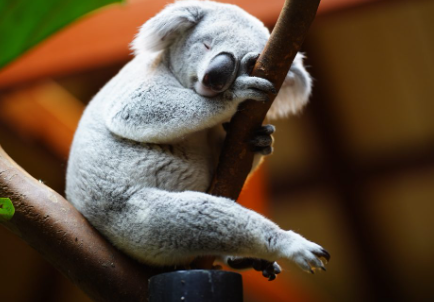
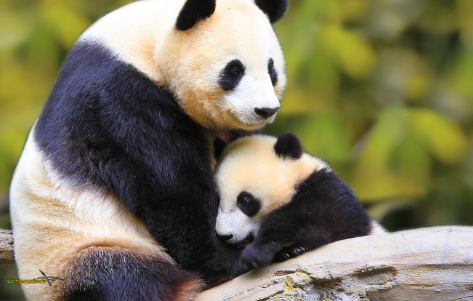

Ces deux animauxnont en commun de manger toujours la meme plante, ce qui peut etre dangereux pour leur survie
 Le koila, à gauche, qui ressemble à un ourson, ne mange que des feuilles d'eucalyptus. IL ne boit jamais, il se désaltère avec le jus contenu dans les feuilles. Ce petit animal ne vit qu'en Australie. Le panda, à droite, lui ne mange que du bambou, surtout les feuilles et les pousses tendres. Pour etre rassasié, il en mange pendant presque 12 heures par jour. Mais le bambou a du mal à se renouvler, ce qui met la vie des panda en danger